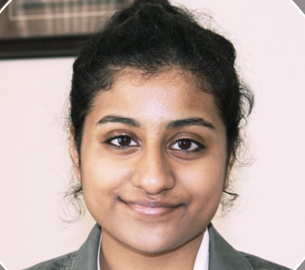
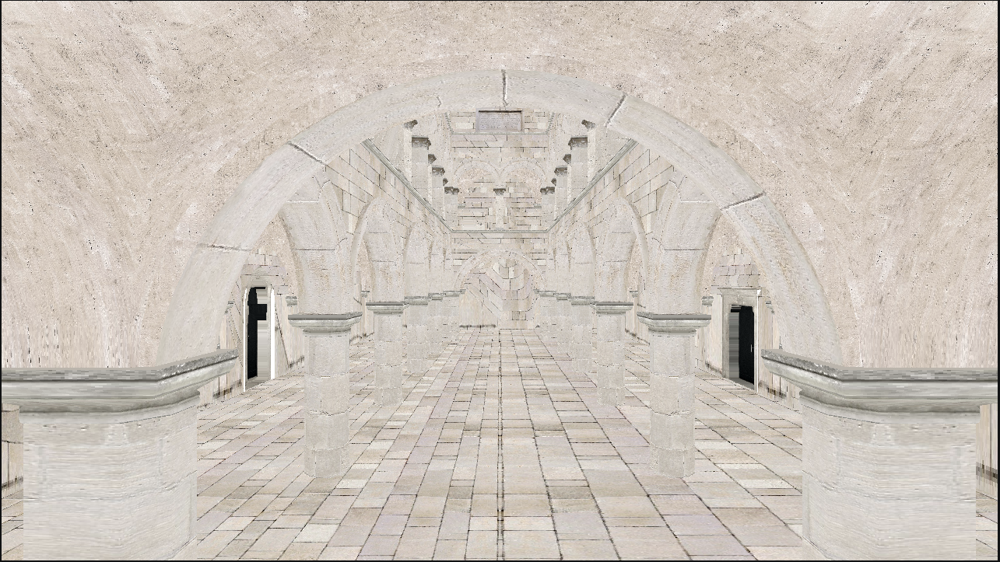

Varsha Danduri
I build the pipelines and tools that move data and assets through production. ML infrastructure on the research side, asset and DCC tooling on the graphics side, plus enough hands-on modeling and rigging to know what breaks downstream.
Feel free to explore my portfolio, or connect with me below.
Pipeline & Tools
Python, USD, Blender Python API, Docker, Airflow, Git automation
Data & Backend
PostgreSQL, Apache Kafka, Snowflake, Flask, Node.js, CI/CD (GitHub Actions)
Graphics
HLSL, GLSL, OpenGL, C++, Unity, Blender
ML
Multimodal pipelines, PyTorch, LoRA fine tuning
Pipeline & Tools

Multimodal Clinical Data Pipeline
Extended an open source clinical ML pipeline from structured data only to multimodal ingestion, preprocessing, and automated training

Grass Tuning Tool
In-editor UI so artists can tune procedural grass density, wind, and LOD without touching shader code

Kitin
State driven git automation for the full remediation lifecycle, with append only audit logs and least privilege SQL access
In Progress
Asset Publish & Versioning System
One click publish with validation, versioning, Postgres metadata, and downstream job triggering via Airflow, DVC, and Docker
In Progress
Blender to USD Exporter
Custom Blender addon exporting layered USD with geometry, material, and rig sublayers plus Principled BSDF to UsdPreviewSurface mapping
In Progress
Asset Validator
Standalone QC tool for naming, transforms, UVs, materials, and texture paths, with a safe autofix mode
Graphics

Anika Rig
Production style character rig with corrective shapekeys, IK/FK limbs, and a custom skirt collision system

CPU Rasterizer
Software renderer from hello triangle to textured Sponza on the CPU

Metal Shader
Procedural metal with Musgrave and Voronoi droplets, built up through normal mapping
Bouncing Ball
GPU parallel ball physics with texture based state and instanced rendering

Image Convolution
Multithreaded 3×3 kernel filters in C (edge, blur, sharpen, emboss, and more)
Machine Learning & Data
Leadership
I care about making technical work reachable for people who aren't specialists, which is the same reason I build tools.
Vice President, Google Developer Group
University of Delaware
Lead a developer community chapter and organize technical programming, including AI in Action, a regional conference for roughly 500 developers and creators.
Treasurer, ACM-W
University of Delaware
Manage chapter finances and support programming that lowers the barrier for women entering computing fields.